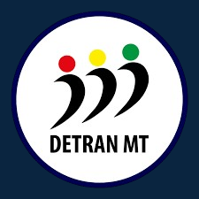

Bem-vindo ao Gerador de Documentos
Gerador de Documentação para o DETRAN-MT
Gerador de Documentos - DETRAN-MT
Escolha a documentação a ser gerada:
DFD (Documento de formalização de Demanda)
Gerar Documentação